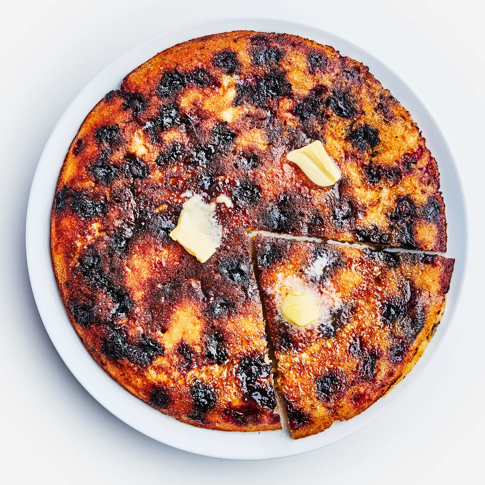

Giant Pancakes
Home

While we love the concept of making pancakes for a crowd, we don't love the reality of standing over the stove, dishing out pancakes to guests like a short-order cook. And so this crowd-feeding "oven pancake" was born:
Making one giant pancake instead of a bunch of smaller ones means that everyone will sit down to pancake breakfast at the same time. And because it's no flip, you don't have to worry about your spatula "skills." Use the 10 minutes when the pancake is in the oven to locate your maple syrup and butter and get plates onto the table.
Ingredients
- 1 cup all-purpose flour
- ⅓ cup cornmeal (not coarse, medium- or fine-grind works)
- 2 large eggs
- ¼ cup of sugar
- 1 Tbsp. baking powder
- ½ tsp. baking soda
- 2 tsp. Diamond Crystal or 1¼ tsp. Morton kosher salt
- 1½ cups buttermilk, divided
- 4 Tbsp. unsalted butter, melted, divided, plus more room temperature for serving
- 1 cup fresh blueberries
- 1 Tbsp. vegetable oil
- Maple syrup, for serving
Steps
- Preheat oven to 375°. Whisk 1 cup all-purpose flour and ⅓ cup cornmeal in a small bowl.
- Whisk 2 large eggs, ¼ cup sugar, 1 Tbsp. baking powder, 2 tsp. Diamond Crystal or 1¼ tsp. Morton kosher salt, and ½ tsp. baking soda in a medium bowl until eggs are lightened and smooth, about 30 seconds.
- Add ¾ cup buttermilk and half of the dry ingredients and whisk very gently just to barely combine.
- Add 2 Tbsp. melted butter, remaining ¾ cup buttermilk, and remaining dry ingredients and whisk just to combine (some lumps are okay). Adding the dry ingredients in two batches, rather than all at once, lessens the risk of over-mixing (which would deflate and toughen the batter).
- Using a wooden spoon, fold in 1 cup fresh blueberries. We're using conventional blueberries—the kind you pick up at the grocery store—because they're so easy to find. But if you have access to those teeny-tiny, burst-in-your-mouth wild blueberries (what, are you in Maine or something?), by all means, use those..
- Heat 1 Tbsp. vegetable oil and 2 Tbsp. melted butter in a large oven-safe nonstick skillet (make sure it's at least 8 inches in diameter) over medium-high. We're using a combination of oil and butter because butter adds a lot of flavor but has a low smoke point (which means that it burns easily); mixing it with oil raises that smoke point so that we can have the best of both worlds.
- When foaming subsides, scrape in batter and use the back of a spoon to gently nudge it all the way to the edges.
- Reduce heat to medium and cook, shaking pan back and forth occasionally to ensure pancake will eventually slide out freely, until bubbles appear across surface of pancake, 5–6 minutes (it will still look quite wet and uncooked in the center, but you should see some browning around the outer edge).
- Transfer pan to oven and cook until pancake is puffed and set, 10–12 minutes. Invert pancake onto a large plate or platter. Admire the crispy, burnished top—its pock-marked surface contains all of your lacey-edged pancake fantasies.
- Cut into wedges and serve with room-temperature butter and maple syrup.